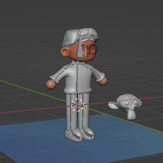
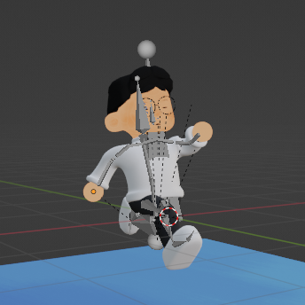

Website ini digunakan untuk menyimpan aset-aset yang aku ingin share, feel free to download.
Blender Rig (version checked Blender 3.6.23 LTS)
Head model by youtuber tinynocky, selain itu aku yang model. ada 3 main bones: leg, body (bendy bones!) and head, dan bisa juga edit ekspresi muka dengan shape key. It's a janky rig... but it works.


The Classroom
Cobain stylize 3d objek, berawal dari ngegambar 2d lalu buat 3d modelnya dan jadikan gambar sebagai texture objek tersebut.
More nanti lagi...